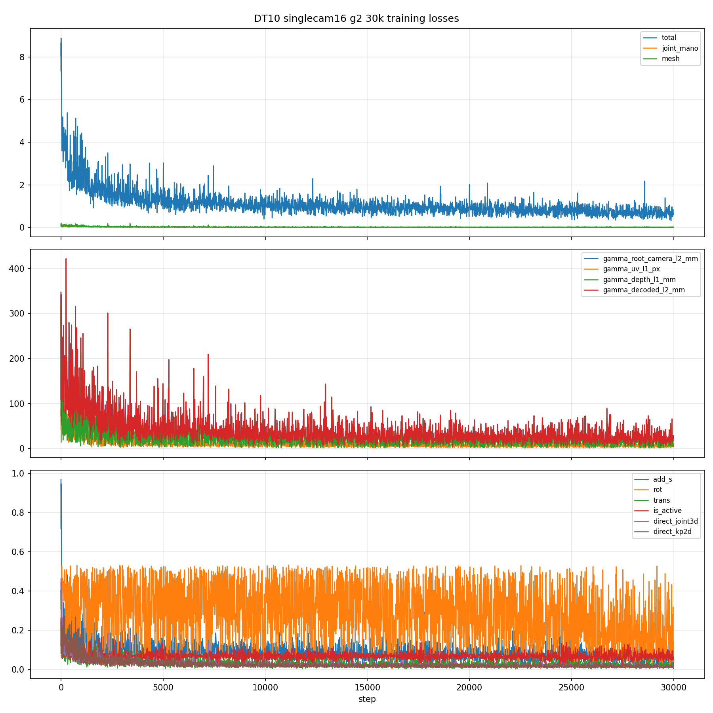

Publish DT10 singlecam16 g2 30k training loss curve, fixed all/seen/unseen eval results, and seen/unseen visualizations.
| Task | Status | Commit | What landed |
|---|---|---|---|
| TRAIN-COMPLETE | PASS | Confirmed pt-hnuvmuub completed and final.pt loaded with 452 trainable tensors at step 30000. | |
| EVAL | PASS | Ran fixed all/seen/unseen eval on the single-camera 16-object benchmark and verified by_object_split includes seen_object and unseen_object. | |
| VISUALIZATION | PASS | Generated loss curve, RGB overlays, and HOT3D-style multiframe/rotating videos for representative seen and unseen windows. | |
| PUBLISH | PASS | Packaged public assets and published this tracking page. |
Seen hand joint/mesh mean is 60.62/60.18 mm, unseen is 67.94/67.71 mm on the fixed 15+15 eval split.
All-split ADD-S is 94.02 mm and rotation error is 124.96 degrees, so the benchmark is not solved despite usable hand-side detection.
| SHA | Type | Subject |
|---|---|---|
| 24f5479172d83c9b185fe185fe9328e241bc8819 | remote train/eval | Add DT10 exact-window eval split metrics |
| Aspect | Current state |
|---|---|
| remote worktree | /mnt/afs/haonan/hoi3r/HOI3R/.worktrees/feat-dt10-singlecam16-benchmark-20260514 |
| training job | pt-hnuvmuub, 2 GPU, 30000 steps, commit 24f5479 |
| output root | /Users/hnhe/Downloads/SLAI/hoi3r/logs/dt10_anchoruvz_v37/singlecam16_randwin_static_rope_anchoruvz_v37_24f5479/seed0_g2_steps30000_r1 |
| Task | Priority | What's needed |
|---|---|---|
| BENCHMARK-COMPARE | P1 | Compare this 2-GPU 30k singlecam16 result against the earlier 10k anchor-UVZ baseline before using it as a stage gate. |
| Split | Windows | Hand Joint L2 | Hand Mesh L2 | ADD-S | Rot | Trans | Det F1 |
|---|---|---|---|---|---|---|---|
| all | 30 | 64.29 mm | 63.96 mm | 94.02 mm | 124.96 deg | 64.99 mm | 0.8501 |
| seen | 15 | 60.62 mm | 60.18 mm | 99.78 mm | 122.36 deg | 68.40 mm | 0.8930 |
| unseen | 15 | 67.94 mm | 67.71 mm | 88.36 mm | 127.57 deg | 61.64 mm | 0.8103 |
Raw files: metrics_summary.csv, eval_visualization_summary.json.
loss_curve_summary.csv · loss_curve_summary.json

Seen window: 20201002-subject-08/20201002_105343:0. Unseen window: 20201002-subject-08/20201002_112501:0.
| Split | RGB Overlay | 3D Multiframe | 3D Rotating |
|---|---|---|---|
| seen | |||
| unseen |
Paste this into a new Claude Code session:
Read https://haonanhe.github.io/HOI3R-project-tracking/updates/2026-05-14-session-summary-dt10-singlecam16-g2-30k-eval-visualization-publish.json and continue from tasks_pending[0] (BENCHMARK-COMPARE [P1]: Compare this 2-GPU 30k singlecam16 result against the earlier 10k anchor-UVZ baseline before using it as a stage gate.). Context: branch main@5532237a904ef3ac0c41d6f2f5b6d45bf7690104.